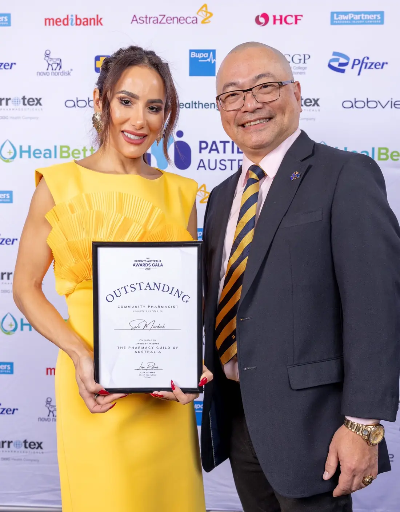

Baghdad
From war-torn Iraq
At 12 years old, Sara fled war-torn Iraq with her family, arriving in Australia as a refugee — carrying nothing but hope and resilience.
An award-winning community pharmacist, advocate, and leader — Sara Murdock turns two decades of resilience into patient-first care, and a national push for more women to lead in pharmacy.

At 12 years old, Sara fled war-torn Iraq with her family, arriving in Australia as a refugee — carrying nothing but hope and resilience.
That early experience of displacement still shapes her mission — to make healthcare accessible, dignified, and deeply human.
From cleaning shelves after school to studying at Monash, opening pharmacies across regional NSW, and leading in industry — service became her purpose.
Today she leads a patient-first health hub at Pharmacy 777 Pascoe Vale, and a national push for more women to lead in pharmacy.
Read her full storyThey don't just rise individually. They transform workplaces, change policies, and inspire the next generation.
Accessible. Dignified. Human.
Care that reaches the people most often left behind, not only those who find it easily.
Every patient met with respect and understanding, never reduced to a prescription.
Medicine delivered with compassion, courage, and community at its heart.
“Thank you for all the guidance, all the lessons, all the opportunities. I'll be following your guide to be a pharmacist more focused on integrated health — you've inspired me to work harder for the better care of patients.”Emily — pharmacy student, RMIT placement
Available for speaking engagements, mentoring, media features, and community partnerships.
contact@saramurdock.com